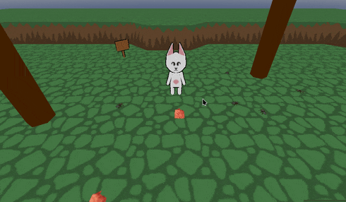

[CritterCatch] first look
hi all,
for the past few months, ive been quietly working on projects.
im taking a break from that
to start a project i can post about.

CritterCatch is a game about catching different kinds of bugs. the player will use a bugnet to catch and sell butterflies, beetles, and ants.
in the game's current state, the player can walk around and pick up ants with their paws. the player wont be picking up bugs directly in the final version- im using this form of bug catching for debugging. debugging via debugging.
the project reuses code from Silver Key. the pathfinding code allows the player to click on an object and the character to walk to it. the inventory system is also a cleaned up, simplified version of Silver Key's.

that is all i have for now. thank you for your patience, i am still alive and i will see you in april
- ciaran